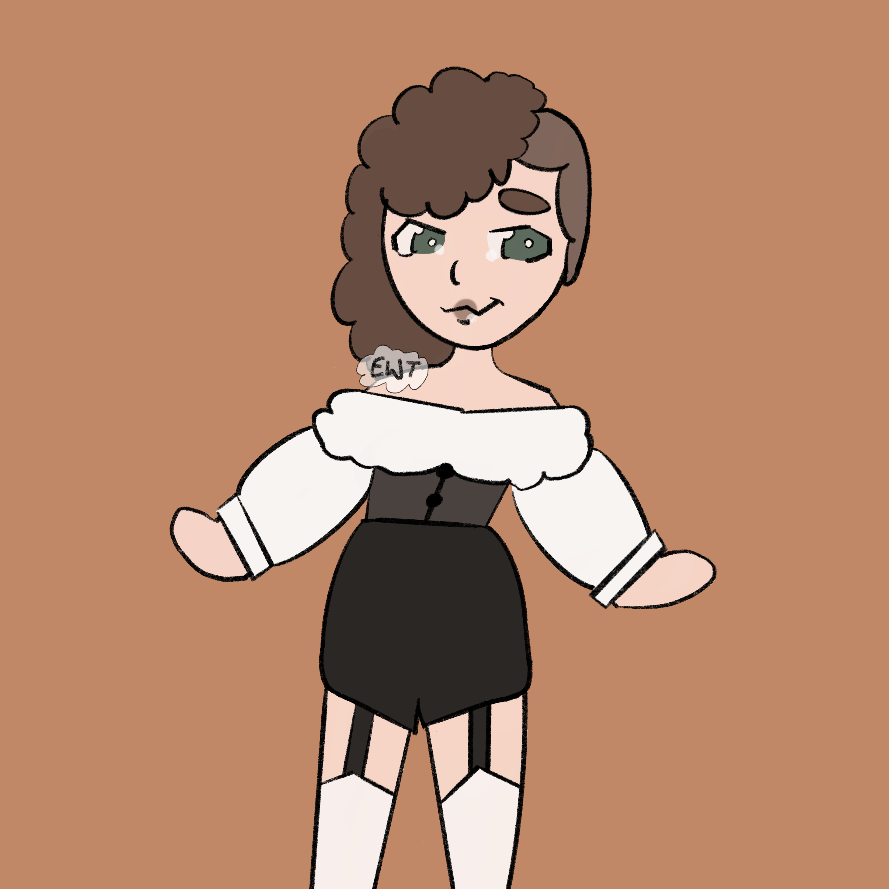

marcus' first concept art
February 20 2025
| full name | marcus holloway |
|---|---|
| nickname | marcus the bastard |
| pronouns | he/they/she |
| age | 30 |
| alignment | chaotic good |
| gender | male but only loosely |
|---|---|
| orientation | pansexual |
| eyes | green |
| hair | brown |
| skin | pale |

Marcus is the truly the face of the party. He is a changeling rogue. He is a changeling who was who was switched out for the viscount of the land by an organization called the House of Veyne. He takes on his normal appearance when he does not have to appear as the viscount. He likes when he doesn't have to put on the viscount persona. He gets to be more upfront about being reserved / an introvert, he gets to be a normal person with normal friends and normal hobbies. He actually will sometimes intentionally come off as rude and standoff-ish just to be left to himself.
Marcus doesn't remember much about life before the House. When he was 5, they told him that he was not truly his parent's child, that he was a changeling and the House had organized switching him for the viscount. They offered to train him and help him reach his potential, and he gladly accepted in his childlike naivity. In return, he was required to use his influence to help the House reach it's goals. He was trained not just in the use of his magic but also the art of stealth and deception. He learned how to slip in and out of the different characters he played, using his changeling abilities to get himself and the House out of trouble.